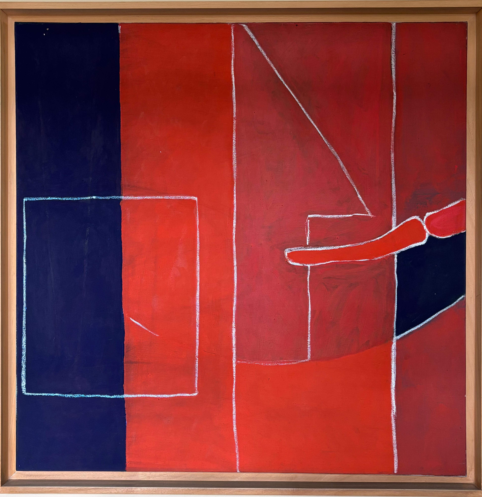

Fracciones pedazos y piezas

En esta obra, el autor organiza el plano mediante una estructura geométrica basada en líneas finas de contorno blanco que delimitan figuras simples rectángulos, cuadrados y líneas anguladas sobre una superficie dominada por el rojo y el azul. El principio de pregnancia de la Gestalt se hace evidente en la simplificación formal y la claridad de los elementos, que, a pesar de la abstracción, resultan fácilmente distinguibles. El uso del color crea un fuerte contraste entre el rojo cálido y el azul oscuro, estableciendo un equilibrio visual entre masas planas. La división vertical del plano sugiere un ritmo compositivo pausado, reforzado por la simetría parcial entre los elementos. La jerarquía visual está determinada por el color y el encuadre: el gran bloque azul en la izquierda ancla el peso visual, mientras que las líneas blancas guían el recorrido ocular hacia la derecha, donde una forma curva rompe la rigidez del conjunto y activa la tensión compositiva.
🎨 ¿Sabías que…?
🔺 Cada línea blanca fue trazada a mano como si el artista quisiera “dibujar con tiza” sobre un fondo vibrante. ¡Casi como si fuera un mural escolar abstracto!
🔺 Cada línea blanca fue trazada a mano como si el artista quisiera “dibujar con tiza” sobre un fondo vibrante. ¡Casi como si fuera un mural escolar abstracto!
🟥 Los colores rojo y azul marino no están ahí por casualidad: evocan una tensión entre lo emocional (rojo) y lo racional (azul oscuro). ¿Notas cómo se cruzan sin mezclarse?
📐 Las figuras geométricas parecen puertas, ventanas y formas arquitectónicas… ¿Podría ser un plano secreto disfrazado de arte?
✋ ¿Lo ves? Una figura a la derecha se asemeja a un brazo extendido. Algunos ven un saludo, otros una barrera. ¿Y tú qué ves?
👀 No hay una sola perspectiva correcta: esta obra invita a moverse alrededor de ella para encontrar nuevas interpretaciones. ¡Es un rompecabezas visual sin instrucciones!